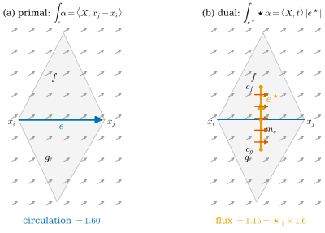
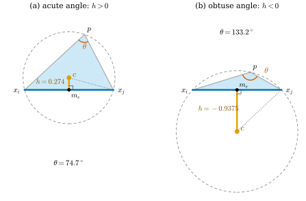
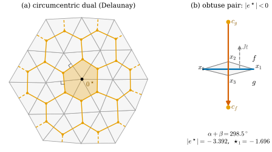
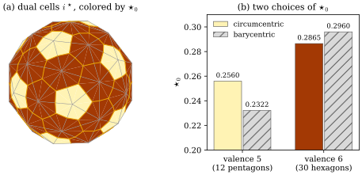

36.5 Dual Forms and the Discrete Hodge Star
Goals
- dual cell에 orientation을 주고 dual discrete form을 정의하며, dual exterior derivative가 \(\tilde d_0 = d_1^{\mathsf T}\), \(\tilde d_1 = -d_0^{\mathsf T}\)임을 증명할 수 있다.
- circumcentric dual을 만들고, primal–dual이 직교함과 signed dual length를 설명할 수 있다.
- cotan formula \(\abs{e^\star}/\abs{e} = \tfrac12(\cot\alpha + \cot\beta)\)를 obtuse한 경우까지 완전하게 증명할 수 있다.
- diagonal Hodge star \(\star_0, \star_1, \star_2\)를 정의하고, 그것이 상수 form에서 정확함을 증명하며, 다른 선택과 비교할 수 있다.
Prerequisites
- Definition 33.6.1, Definition 33.6.2: dual cell \(\sigma^\star\)와 dual complex, Proposition 33.6.6: dual incidence는 transpose
- Definition 34.2.5: Hodge star, (34.2.6): 평면의 \(\star\)
- Proposition 36.2.13: chain 위의 적분, Definition 36.4.1, Theorem 36.4.5: discrete \(d\)와 Stokes
- Proposition 36.3.2: \(+90^\circ\) 회전 \(J\)
Motivation
Section 36.4의 \(d_0, d_1\)과 de Rham map은 vertex의 위치와 연결 구조만 썼다. 길이와 각은 한 번도 나오지 않았다. smooth 세계에서도 \(d\)는 metric 없이 정의되지만, Hodge star \(\star\)는 inner product를 쓴다(Definition 34.2.5). 그리고 L2 inner product, codifferential, Laplacian은 모두 \(\star\)를 거친다(Section 35.5). 그러므로 mesh 위의 Laplacian을 만들려면 metric을 담은 discrete \(\star\)가 필요하다.
평면에서 1-form의 \(\star\)는 “선을 따라 흐르는 양”을 “선을 가로지르는 양”으로 바꾼다(Section 33.6의 Smooth vs. Discrete 상자). edge \(e\)를 따라 잰 값을 가로지르는 양으로 바꾸려면, \(e\)를 가로지르는 선분이 있어야 한다. 그것이 dual edge \(e^\star\)다. Chapter 33은 dual cell을 위치 없이 조합적으로만 정의하고, orientation과 기하를 이 절에 남겼다(Proposition 33.6.6 뒤). 이 절은 그 둘을 정하고, circumcenter를 dual vertex로 고르면 cotangent가 나온다는 것을 증명한다.
Dual Cells, Their Orientation, and Dual Forms
이 절에서 \(\mathcal{K}\)는 consistently oriented simplicial surface(boundary가 있어도 된다)이고, face list가 orientation을 준다: \(\R^2\)의 mesh는 반시계 방향, \(\R^3\)의 닫힌 mesh는 바깥쪽이다. dual cell \(\sigma^\star\)는 Definition 33.6.1의 것이다. boundary edge의 dual edge는 그 edge의 중점에서 끝나는 반쪽이다.
Remark 36.5.1 (dual orientation convention). 이 study set은 dual cell에 다음 orientation을 준다.
- dual vertex \(f^\star\)는 \(+\)이다.
- edge \(e = [i, j]\)의 dual edge \(e^\star\)는 \(o(g, e) = -1\)인 face \(g\)의 dual vertex에서 \(o(f, e) = +1\)인 face \(f\)의 dual vertex로 간다(\(o\)는 relative orientation, 곧 \(d_1\)의 성분). \(\R^2\)의 반시계 방향 mesh에서 \(f\)는 \(i \to j\)의 왼쪽, \(g\)는 오른쪽에 있으므로, \(e^\star\)는 \(e\)를 \(+90^\circ\) 돌린 방향 \(J(x_j - x_i)\)을 향한다.
- dual face \(i^\star\)는 face들과 같은 방향(평면에서는 반시계 방향)으로 돈다.
둘째 항목의 “왼쪽”을 확인하자. \(o(f, [i,j]) = +1\)이면 \(f\)의 순서가 \([i, j, k]\)(cyclic)이고, \(f\)가 반시계 방향이므로 \(\det(x_j - x_i, x_k - x_i) \gt 0\), 곧 \(x_k\)가 \(i \to j\)의 왼쪽에 있다. 부호의 정본은 이 규약과 lib/ch36.py의 left_right_faces, dual_d0, dual_d1이다(tools/dgdec.py에는 dual \(d\)가 아직 없다).
Definition 36.5.2 (dual discrete form). oriented dual \(k\)-cell마다 실수 하나를 주되 orientation을 뒤집으면 부호가 바뀌게 한 것을 dual discrete form(쌍대 이산 형식), 짧게 dual \(k\)-form이라 한다. Remark 36.5.1의 orientation으로 저장하면 dual 0-form은 \(\R^{n_2}\)(face마다), dual 1-form은 \(\R^{n_1}\)(edge마다), dual 2-form은 \(\R^{n_0}\)(vertex마다)의 vector다. 이와 구별해 Definition 36.1.6의 discrete form을 primal form이라 부른다.
Example 36.5.3 (dual forms from smooth forms). smooth form을 dual cell 위에서 적분하면 dual form이 된다(dual de Rham map, \(\tilde R\)로 쓴다). (a) 2-form \(dx\wedge dy\)를 dual face \(i^\star\) 위에서 적분하면 dual cell의 넓이 \(\abs{i^\star}\)이다. (b) 평면의 1-form \(\star X^\flat = X^1\,dy - X^2\,dx\)를 dual edge \(e^\star\)를 따라 적분하면 vector field \(X\)가 \(e^\star\)를 가로지르는 flux다(Proposition 35.4.12(b)의 계산). (c) 함수 \(g\)를 dual vertex \(f^\star\)에서 읽은 값 \(g(f^\star)\)는 dual 0-form이다.
Non-example 36.5.4 (primal and dual forms do not add). primal 0-form과 dual 2-form은 둘 다 \(\R^{n_0}\)의 vector지만 더할 수 없다. 상수 함수 \(1\)의 primal 0-form은 모든 vertex에서 \(1\)이고(점의 값), \(dx\wedge dy\)의 dual 2-form은 \(\abs{i^\star}\)(넓이)이다. mesh를 반으로 세분하면 앞의 것은 그대로이고 뒤의 것은 \(\tfrac14\)이 된다. 둘의 합은 어떤 smooth 양의 측정도 아니다. 같은 이유로 primal 1-form(edge를 따라 잰 circulation)과 dual 1-form(dual edge를 가로지르는 flux)도 더하지 않는다.

Figure 36.5.1의 두 패널을 비교하자. (a)에서 edge \(e\)를 따라 재는 것은 \(X\)의 가로 성분 \(0.8\)이 길이 \(2\)만큼 쌓인 \(1.6\)이다. (b)의 dual edge는 \(e\)와 수직이라 \(X\)의 가로 성분이 그것을 가로지르고, 그 길이 \(1.44\)만큼 쌓여 \(1.152\)가 된다. 두 측정은 같은 “가로 성분”을 서로 다른 길이로 적분한 것이다. 상수 field에서는 정확히 \(\abs{e^\star}/\abs{e}\)배 차이가 나고, 이 비가 diagonal Hodge star의 출발점이다.
dual cell도 Stokes's theorem으로 \(d\)를 갖는다. dual \(k\)-form의 dual \((k+1)\)-cell 위의 값은 그 boundary의 dual \(k\)-cell 값을 relative orientation의 부호로 더한 것이다(Definition 36.4.1과 같은 규칙). 이것을 dual exterior derivative \(\tilde d_0, \tilde d_1\)이라 하자.
Proposition 36.5.5 (the dual exterior derivative). boundary가 없는 consistently oriented surface에서 Remark 36.5.1의 orientation을 쓰면
이고, 따라서 \(\tilde d_1\tilde d_0 = -(d_1d_0)^{\mathsf T} = 0\)이다.
Proof idea: dual cell의 boundary를 primal의 incidence로 읽는다. dual edge의 양 끝은 두 face이고, dual face의 변은 vertex를 품은 edge들이다(Proposition 33.6.6). 남는 것은 부호다.
Proof. \(\tilde d_0\): Remark 36.5.1에서 \(e^\star\)는 \(g^\star\)(\(o(g, e) = -1\))에서 \(f^\star\)(\(o(f, e) = +1\))로 가므로 \(\partial e^\star = [f^\star] - [g^\star] = \sum_{h \ni e}o(h, e)\,[h^\star]\)이다. 따라서 dual 0-form \(w\)에 대해 \((\tilde d_0w)_{e^\star} = \sum_ho(h, e)\,w_h = (d_1^{\mathsf T}w)_e\)이다.
\(\tilde d_1\): vertex \(i\) 둘레의 face를 orientation 방향으로 \(f_1, f_2, \dots, f_m\)이라 하고 \(f_r = [i, j_r, j_{r+1}]\)(Section 33.6의 기호, \(j_{m+1} = j_1\))로 쓰자. \(f_{r-1} = [i, j_{r-1}, j_r]\)과 \(f_r\)은 edge \(\{i, j_r\}\)을 공유하고, \(i^\star\)의 boundary는 \(f_{r-1}^\star \to f_r^\star\)의 순서로 이 edge의 dual을 지난다. edge가 \([i, j_r]\)로 저장되어 있으면(\(i\)가 tail, \(o(e, [i]) = (d_0)_{e,i} = -1\)) \(o(f_r, e) = +1\), \(o(f_{r-1}, e) = -1\)이므로 \(e^\star\)는 \(f_{r-1}^\star \to f_r^\star\)를 향해 \(i^\star\)의 boundary 방향과 같다. \([j_r, i]\)로 저장되어 있으면(\(i\)가 head, \((d_0)_{e,i} = +1\)) \(e^\star\)는 반대다. 두 경우 모두 \(e^\star\)가 \(\partial i^\star\)에 들어가는 부호는 \(-(d_0)_{e,i}\)이다. 따라서 dual 1-form \(\beta\)에 대해 \((\tilde d_1\beta)_{i^\star} = -\sum_e(d_0)_{e,i}\beta_e = -(d_0^{\mathsf T}\beta)_i\)이다. 마지막 주장은 Theorem 36.4.8의 transpose다.
부호 \(-\)는 규약의 결과다. dual edge를 \(-90^\circ\) 방향으로 orient하면 \(\tilde d_0 = -d_1^{\mathsf T}\), \(\tilde d_1 = d_0^{\mathsf T}\)가 된다(Exercise 36.5.3). 어느 규약이든 뒤에서 쓰는 cotan Laplacian \(L = -d_0^{\mathsf T}\star_1d_0\)에는 \(\tilde d\)가 직접 나타나지 않으므로 영향이 없다.
boundary가 있는 mesh에서도 위 증명은 국소적으로 그대로 쓸 수 있다. \(\tilde d_0\)의 증명은 edge 하나를 공유하는 두 face만, \(\tilde d_1\)의 증명은 vertex 하나 둘레의 face만 보기 때문이다. 그래서 (36.5.1)은 interior edge의 행과 interior vertex의 행에서 그대로 성립한다. boundary에서는 사정이 다르다. boundary edge의 dual edge는 dual vertex가 아닌 중점 \(m_e\)에서 끝나고, boundary vertex의 dual cell \(i^\star\)의 boundary에는 dual edge 말고도 primal boundary edge의 반쪽 두 개가 들어간다. \(d_1^{\mathsf T}\)와 \(-d_0^{\mathsf T}\)의 그 행은 dual edge 쪽만 센다. 이 장은 boundary가 있는 mesh에서도 \(\tilde d_0 := d_1^{\mathsf T}\), \(\tilde d_1 := -d_0^{\mathsf T}\)로 쓰고(Section 36.6), 빠진 boundary 쪽 항은 boundary condition의 문제로 Section 42.5에서 다룬다.
The Circumcentric Dual
dual vertex를 어디에 두느냐가 dual cell의 길이와 넓이를 정한다. Hodge star가 flux와 circulation의 비라면 dual edge는 primal edge에 수직이어야 한다(Figure 36.5.1). triangle마다 세 edge의 수직이등분선이 한 점에서 만나므로, 그 점, 곧 circumcenter가 자연스러운 선택이다.
Definition 36.5.6 (circumcentric dual). triangle \(f\)의 circumcenter를 \(c_f\), edge \(e\)의 중점을 \(m_e\)라 하자. \(f\)의 edge \(e\)에 대해 \(h_{f,e}\)를 \(f\)의 평면 안에서 \(m_e\)에서 \(c_f\)까지의 부호 있는 거리(\(c_f\)가 \(e\)를 지나는 직선에 대해 \(f\)의 나머지 vertex와 같은 쪽이면 \(+\))라 한다. dual vertex \(f^\star = c_f\), dual edge \(e^\star\) = 1-chain \([c_g, m_e] + [m_e, c_f]\)(Remark 36.5.1의 \(g, f\). boundary edge는 한 항), dual face \(i^\star\) = 2-chain \(\sum_{f \ni i}\big([x_i, m_{ij}, c_f] + [x_i, c_f, m_{ik}]\big)\)(\(f = [i, j, k]\))로 정한 dual을 circumcentric dual(외심 쌍대)이라 하고, 그 크기를
로 정한다(부호 있는 길이와 넓이. boundary edge는 한 항).
dual cell을 Section 36.2의 chain으로 정의한 덕분에 길이와 넓이는 각 조각의 부호 있는 크기의 합이 되고, circumcenter가 triangle 밖으로 나가도 정의가 그대로 성립한다. triangle이 모두 acute이면 모든 \(h \gt 0\)이고, interior vertex의 \(i^\star\)는 \(c_{f_1}, m, c_{f_2}, m, \dots\)를 꼭짓점으로 하는 다각형, 곧 \(i\)의 Voronoi cell을 star에 제한한 것이다. 곡면 mesh에서는 \(e^\star\)의 두 조각이 서로 다른 평면에 있고, \(\abs{e^\star}\)는 두 triangle을 공유 edge를 따라 평면에 펼쳤을 때의 길이다(Section 38.6).
Example 36.5.7 (three triangles). (a) 한 변이 \(\ell\)인 정삼각형: circumcenter는 무게중심이고 \(h = \tfrac{\ell}{2\sqrt3}\)이다(무게중심에서 변까지의 거리는 높이 \(\tfrac{\sqrt3}{2}\ell\)의 \(\tfrac13\)). (b) 직각삼각형: circumcenter는 빗변의 중점이므로 빗변에 대한 \(h\)는 \(0\)이다. (c) 둔각삼각형: circumcenter가 triangle 밖, 둔각의 맞은편 변 너머에 있으므로 그 변에 대한 \(h\)는 음수다. 예를 들어 \(x_i = (-1, 0)\), \(x_j = (1, 0)\), \(p = (0.3, 0.4)\)이면 \(c = (0, -0.9375)\), \(h = -0.9375\)이다(Figure 36.5.2(b)).
Verification: verify/v-36-5-discrete-hodge-star.py
Non-example 36.5.8 (the barycentric dual is not orthogonal). dual vertex를 무게중심 \(b_f\)에 두는 barycentric dual에서는 dual edge \([m_e, b_f]\)가 일반적으로 \(e\)에 수직이 아니다. triangle \((0, 0), (2, 0), (0, 1)\)과 그 밑변 \(e\)에서 \(m_e = (1, 0)\), \(b_f = (\tfrac23, \tfrac13)\)이고 \(b_f - m_e = (-\tfrac13, \tfrac13)\)은 \(e\)와 \(45^\circ\)를 이룬다. 그래서 \(e\)와 평행한 흐름도 이 dual edge를 “가로지른다”(Exercise 36.5.4). 정삼각형에서는 무게중심과 circumcenter가 같아 두 dual이 일치한다.
Lemma 36.5.9 (the circumcenter seen from an edge). triangle \(f\)의 edge \(e\)와 그 맞은편 각 \(\theta \in (0, \pi)\)에 대하여 (a) \(c_f - m_e\)는 \(e\)에 수직이고 (b)
이다. 특히 \(\theta\)가 acute, right, obtuse이면 \(h_{f,e}\)는 각각 양수, \(0\), 음수다.
Proof. \(f\)의 평면에 직교좌표를 잡아 \(e\)의 끝점을 \(x_i = (-a, 0)\), \(x_j = (a, 0)\)(\(a = \abs{e}/2\)), 나머지 vertex를 \(p = (p_1, p_2)\), \(p_2 \gt 0\)으로 두자(\(f\)가 위쪽에 있다). (a) \(c_f\)는 \(x_i, x_j\)에서 같은 거리에 있으므로 수직이등분선 \(x = 0\) 위에 있고, \(m_e = (0, 0)\)이므로 \(c_f - m_e\)는 \(e\)에 수직이다. (b) \(c_f = (0, c)\)라 하면 \(\abs{c_f - x_i}^2 = \abs{c_f - p}^2\)에서 \(a^2 + c^2 = p_1^2 + (p_2 - c)^2\), 곧 \(c = \dfrac{p_1^2 + p_2^2 - a^2}{2p_2}\)이다. 한편 \(\theta\)는 \(u = x_i - p\)와 \(w = x_j - p\) 사이의 각이고
\[ \begin{aligned} \inner{u}{w} &= (-a - p_1)(a - p_1) + p_2^2 \\ &= p_1^2 + p_2^2 - a^2, \\ u^1w^2 - u^2w^1 &= (-a - p_1)(-p_2) - (-p_2)(a - p_1) \\ &= 2ap_2 \gt 0 \end{aligned} \]
이므로 \(\cot\theta = \dfrac{\inner{u}{w}}{u^1w^2 - u^2w^1} = \dfrac{p_1^2 + p_2^2 - a^2}{2ap_2}\)이다(분모는 \(\abs{u}\abs{w}\sin\theta \gt 0\)). 따라서 \(c = a\cot\theta\)이다. \(p_2 \gt 0\)이므로 \(c \gt 0\)은 \(c_f\)가 \(p\)와 같은 쪽에 있다는 뜻이고, 정의에 의해 \(h_{f,e} = c = \tfrac{\abs{e}}{2}\cot\theta\)이다. 마지막 문장은 \(\cot\)의 부호다.

Figure 36.5.2의 (a)를 보자. \(c\)에서 edge로 내린 수선의 발이 \(m_e\)이고, \(c\), \(m_e\), \(x_j\)가 직각삼각형을 이룬다. 그 \(c\)에서의 각은 원주각 \(\theta\)와 같으므로 밑변 \(\abs{e}/2\)와 높이 \(h\)의 비가 \(\tan\theta\)다. 이것이 (36.5.3)을 그림으로 읽는 법이다. (b)처럼 \(p\)가 edge에 가까워져 \(\theta\)가 \(90^\circ\)를 넘으면 원이 커지면서 중심이 edge 아래로 넘어간다. 증명은 원주각 정리 대신 좌표 계산을 썼으므로 이 경우도 따로 다룰 필요가 없다.
Theorem 36.5.10 (cotan formula). circumcentric dual에서 interior edge \(e\)의 맞은편 두 각을 \(\alpha_e, \beta_e\)라 하면
이다. boundary edge(맞은편 각 \(\alpha_e\) 하나)에서는 \(\abs{e^\star}/\abs{e} = \tfrac12\cot\alpha_e\)이다. interior edge에서 이 값은 \(\alpha_e + \beta_e \lt \pi\)이면 양수, \(= \pi\)이면 \(0\), \(\gt \pi\)이면 음수다. boundary edge에서는 \(\alpha_e\)가 acute, right, obtuse일 때 각각 양수, \(0\), 음수다.
Proof. (36.5.2)와 Lemma 36.5.9에서 \(\abs{e^\star} = h_{f,e} + h_{g,e} = \tfrac{\abs{e}}{2}(\cot\alpha_e + \cot\beta_e)\)이다. boundary edge는 한 항이다. 부호는 \(\cot\alpha + \cot\beta = \sin(\alpha + \beta)/(\sin\alpha\sin\beta)\)((31.3.5))에서 \(\sin\alpha\sin\beta \gt 0\)이므로 \(\sin(\alpha + \beta)\)의 부호다(\(0 \lt \alpha + \beta \lt 2\pi\)). boundary edge의 부호는 Lemma 36.5.9의 마지막 문장이다.
이 정리가 말하는 것. dual edge와 primal edge의 길이의 비는 맞은편 두 각만으로 정해진다. 길이를 직접 재지 않아도 각에서 \(\star_1\)이 나온다. \(\alpha + \beta \gt \pi\)인 edge는 Delaunay 조건을 어기는 edge이고(Section 31.3), 그런 edge에서 dual edge는 거꾸로 놓인다.
Corollary 36.5.11 (circumcentric dual cell areas). vertex \(i\)의 circumcentric dual cell의 부호 있는 넓이는
이다. 여기서 \(\theta_j, \theta_k\)는 \(f\)의 \(x_j, x_k\)에서의 각이다.
Proof. (36.5.2)의 각 항 \(\tfrac12\cdot\tfrac{\abs{e_{ij}}}{2}h_{f,e_{ij}}\)에 (36.5.3)을 넣으면 \(\tfrac12\cdot\tfrac{\abs{e_{ij}}}{2}\cdot\tfrac{\abs{e_{ij}}}{2}\cot\theta_k = \tfrac18\abs{e_{ij}}^2\cot\theta_k\)이다(\(e_{ij}\)의 맞은편 각은 \(\theta_k\)). \(e_{ik}\)의 항도 같다.
각 항은 다리가 \(\abs{e}/2\)와 \(h\)인 직각삼각형 \([x_i, m_e, c_f]\)의 부호 있는 넓이다. 이 넓이들을 모두 더하면 triangle마다 그 넓이가 되어 \(\sum_i\abs{i^\star}\)는 mesh 전체의 넓이와 같다. 그 증명과 다른 dual area(barycentric, mixed)와의 비교는 Section 42.4에서 한다.
Example 36.5.12 (a dual edge of negative length).
lib/ch36.non_delaunay_pair: \(x_0 = (0, 0)\), \(x_1 = (2, 0)\), \(x_2 = (1, 0.3)\), \(x_3 = (1, -0.25)\), face \(f = (0, 1, 2)\)(위), \(g = (1, 0, 3)\)(아래). 공유 edge \(e = [x_0, x_1]\)의 맞은편 각은 Lemma 36.5.9의 증명의 공식(\(a = 1\))으로 \(\cot\alpha = (0.09 - 1)/0.6 = -1.5167\)(\(x_2\)에서), \(\cot\beta = (0.0625 - 1)/0.5 = -1.875\)(\(x_3\)에서)이고, \(\alpha + \beta = 298.5^\circ\)이다. 따라서 \(h_{f,e} = -1.5167\), \(h_{g,e} = -1.875\): \(c_f\)는 edge 아래, \(c_g\)는 edge 위에 있다. \(\abs{e^\star} = -3.392\), \(\star_1 = \tfrac12(\cot\alpha + \cot\beta) = -1.696\)이다(Figure 36.5.3(b)). dgdec의 self-test가 같은 쌍을 쓴다.
Verification: verify/v-36-5-discrete-hodge-star.py

lib/ch36.equilateral_patch(2)(vertex 19, triangle 24, 간격 1)의 vertex를 seed를 고정한 작은 난수만큼 옮긴 mesh(모든 triangle acute)와 그 circumcentric dual. (b) Example 36.5.12의 non-Delaunay pair. 읽는 법: 회색이 primal edge, 주황 점이 circumcenter, 주황 선이 dual edge다(boundary edge의 dual은 edge 중점에서 끝나는 점선). (a)의 연한 주황은 가운데 vertex의 dual cell \(0^\star\), 작은 꺾임은 직각 표시다. (b)의 파랑이 공유 edge \(e\), 주홍 화살표가 dual edge \(c_g \to c_f\), 회색 점선 화살표가 \(e\)를 \(+90^\circ\) 돌린 방향 \(Jt\)(Remark 36.5.1의 기준 방향)이다. 볼 것: (a)에서 모든 dual edge가 primal edge에 수직이고, dual cell은 Voronoi 모양의 다각형이다. 모든 \(\star_1 \gt 0\)이다. (b)에서는 \(c_g\)가 위, \(c_f\)가 아래에 있어 dual edge가 \(Jt\)와 반대로 놓이고, 그 부호 있는 길이 \(-3.392\)와 \(\star_1 = -1.696\)이 음수다. 본문과의 연결: Definition 36.5.6, Theorem 36.5.10, Example 36.5.12.Figure 36.5.3의 (a)에서 가운데 육각형을 보자. 그 꼭짓점은 vertex 0 둘레의 여섯 triangle의 circumcenter이고, 변은 vertex 0에서 나가는 여섯 edge의 dual edge다. 각 dual edge는 자기 primal edge를 수직으로 가로지른다. 모든 triangle이 acute이면 이렇게 깔끔한 Voronoi 그림이 된다. (b)에서는 사정이 다르다. 두 triangle이 모두 납작해서 맞은편 각이 둘 다 둔각이고, 위 triangle의 circumcenter는 아래로, 아래 triangle의 circumcenter는 위로 넘어가 dual edge가 뒤집힌다. 기하적으로는 길이 \(3.392\)인 선분이지만 orientation 규약에 대해 반대로 놓였으므로 부호 있는 길이는 음수다. 이것이 \(\star_1\)과 cotan weight가 음수가 되는 정확한 이유다.
The Discrete Hodge Star
Definition 36.5.13 (discrete Hodge star). 2차원 mesh 위의 primal \(k\)-form을 dual \((2-k)\)-form으로 보내는 linear map \(\star_k\colon \R^{n_k} \to \R^{n_k}\)(\(k = 0, 1, 2\))을 discrete Hodge star(이산 호지 스타)라 한다. 목표는 smooth form \(\alpha\)에 대해 \(\star_kR_k\alpha \approx \tilde R_{2-k}(\star\alpha)\), 곧 “primal 측정값에서 \(\star\alpha\)의 dual 측정값을 추정하는 것”이다.
가장 단순한 추정은 이렇다. primal 값 \(\hat\alpha_\sigma\)를 \(\abs{\sigma}\)로 나누면 \(\sigma\) 위의 평균 밀도이고, 그 밀도가 dual cell에서도 같다고 보고 \(\abs{\sigma^\star}\)를 곱한다.
Definition 36.5.14 (diagonal Hodge star). 각 simplex마다
로 정한 discrete Hodge star를 diagonal Hodge star(대각 호지 스타)라 한다. 0차원 cell의 크기는 \(1\)로 둔다(\(\abs{x_i} = \abs{f^\star} = 1\)). circumcentric dual을 쓰면 Theorem 36.5.10과 Corollary 36.5.11에서
\[ \begin{aligned} \star_0 &= \diag\big(\abs{i^\star}\big), \\ \star_1 &= \diag\big(\tfrac12(\cot\alpha_e + \cot\beta_e)\big), \\ \star_2 &= \diag\big(1/\abs{f}\big) \end{aligned} \]
이다. 각 행렬은 해당 simplex의 번호(vertex, edge_list, \(F\)의 행) 순서로 쓴다.
dgdec.hodge0(V, F, "circumcentric"), hodge1, hodge2가 이 세 대각 성분이다. hodge0의 기본값은 barycentric이므로(Remark 36.5.17) circumcentric이 필요하면 kind를 준다. 이 장에서 \(\star_0\)은 따로 말하지 않으면 circumcentric이다. 대각 행렬이므로 모든 대각 성분이 \(0\)이 아니면 역행렬 \(\star_k^{-1}\)(dual에서 primal로)은 대각 성분의 역수다(dgdec.hodge_inverse).
Example 36.5.15 (equilateral grid and icosphere).
(a) 간격 \(\ell\)인 정삼각형 grid(lib/ch36.equilateral_patch)에서 모든 각이 \(60^\circ\)이므로 interior edge의 \(\star_1 = \tfrac12(\tfrac{1}{\sqrt3} + \tfrac{1}{\sqrt3}) = \tfrac{1}{\sqrt3} \approx 0.5774\), boundary edge의 \(\star_1 = \tfrac{1}{2\sqrt3} \approx 0.2887\)이다. interior vertex의 dual cell은 정육각형이고 \(\star_0 = \tfrac18\cdot 6\cdot 2\ell^2\tfrac{1}{\sqrt3} = \tfrac{\sqrt3}{2}\ell^2\), \(\star_2 = 1/(\tfrac{\sqrt3}{4}\ell^2)\)이다. (b) dgmesh.icosphere(1)은 모든 triangle이 acute이고, valence 5인 vertex 12개의 \(\star_0 = 0.2560\), valence 6인 vertex 30개의 \(\star_0 = 0.2865\)이며, 합 \(11.6659\)는 triangle 80개의 넓이의 합과 같다(unit sphere의 \(4\pi = 12.566\)보다 작다. triangle은 sphere 안쪽의 평면 조각이다). icosphere(2)에서는 합이 \(12.3298\)이고 모든 \(\star_1 \gt 0\)이다.
Verification: verify/v-36-5-discrete-hodge-star.py

dgmesh.icosphere(1)(vertex 42, triangle 80, 모두 acute)의 circumcentric dual cell \(i^\star\). 각 cell은 face마다 두 개의 직각삼각형 \([x_i, m_{ij}, c_f]\), \([x_i, c_f, m_{ik}]\)로 되어 있다. 읽는 법: (a) 회색은 primal edge, 주황은 dual edge \(m_e c_f\), 색은 cell의 넓이 \(\star_0\)(연할수록 작다)이다. 뒤쪽 face는 그리지 않았다. (b) valence 5와 6인 vertex의 \(\star_0\)를 circumcentric(색 막대)과 barycentric(빗금 막대, 둘레 triangle 넓이의 \(\tfrac13\)씩)으로 비교했다. 볼 것: valence 5인 vertex의 dual cell은 오각형이고 넓이 \(0.2560\), valence 6은 육각형이고 \(0.2865\)로, 넓이가 딱 두 값뿐이다. barycentric 값 \(0.2322\), \(0.2960\)과는 다르지만, 두 선택 모두 합은 \(11.6659\)(전체 넓이)이다. 본문과의 연결: Corollary 36.5.11, Example 36.5.15(b), Remark 36.5.17. 돌려 볼 수 있는 interactive version이 있다.Figure 36.5.4의 (a)에서 연한 노란 오각형을 찾아보자. 정이십면체의 원래 vertex 12개가 그 중심이고, 나머지 vertex는 진한 육각형 cell을 갖는다. 오각형 cell이 더 작은 것은 둘레의 triangle이 다섯 개뿐이고, 그 triangle들도 조금 작기 때문이다. (b)는 dual vertex를 무게중심에 두면 같은 vertex의 \(\star_0\)가 달라진다는 것을 보여 준다. 오각형 쪽은 \(9\%\) 작고 육각형 쪽은 \(3\%\) 크다. 어느 쪽도 smooth sphere의 넓이를 “정확히” 나누는 것은 아니다. 이 선택의 영향은 Chapter 42에서 다시 본다.
Theorem 36.5.16 (the diagonal Hodge star is exact on constant forms). \(\R^2\)의 반시계 방향 mesh와 그 circumcentric dual에서, 상수 \(k\)-form \(\alpha\)(\(k = 0, 1, 2\))에 대하여
\[ \star_kR_k\alpha = \tilde R_{2-k}(\star\alpha) \]
이다. 여기서 \(\tilde R\)은 Remark 36.5.1의 orientation을 준 dual cell(Definition 36.5.6의 chain) 위의 적분이다.
Proof idea: 상수 form은 dual cell 위에서도 같은 밀도를 갖는다. 남는 일은 1-form에서 \(\star\)가 dual edge의 방향(primal edge에 수직)을 primal edge의 방향으로 돌려놓는다는 것을 확인하는 것이다.
Proof. \(k = 0\): \(\alpha = c\)(상수 함수)이면 \(\star\alpha = c\,dx\wedge dy\)이고, \(i^\star\)는 oriented triangle들의 2-chain이므로 그 위의 적분은 각 항의 부호 있는 넓이에 \(c\)를 곱한 것의 합, 곧 \(c\abs{i^\star}\)이다. 이때 각 직각삼각형 \([x_i, m_{ij}, c_f]\)의 부호 있는 넓이가 (36.5.2)의 \(\tfrac12\cdot\tfrac{\abs{e_{ij}}}{2}h_{f,e_{ij}}\)인 것은 \(f\)가 \(i \to j\)의 왼쪽에 있고 \(c_f\)가 \(h \gt 0\)일 때 그 쪽에 있다는 것(Remark 36.5.1 뒤의 확인)에서 나온다(\([x_i, c_f, m_{ik}]\)도 같다). 한편 \((\star_0R_0\alpha)_i = \abs{i^\star}c\)이다.
\(k = 1\): \(\alpha = a\,dx + b\,dy\)이면 \(\star\alpha = a\,dy - b\,dx\)이고((34.2.6), Example 35.5.9(a)와 같은 표), 모든 vector \(v\)에 대해 \((\star\alpha)(v) = a v^2 - b v^1 = \alpha(-Jv)\)이다. edge \(e = [i, j]\)의 unit tangent를 \(t\)라 하자. Lemma 36.5.9(a)와 \(h\)의 정의에서 \(c_f = m_e + h_{f,e}Jt\)(\(f\)는 왼쪽, \(Jt\) 쪽), \(c_g = m_e - h_{g,e}Jt\)(\(g\)는 오른쪽)이다. 상수 form의 선분 위 적분은 끝점의 차이를 넣은 값이므로((35.3.7), \(k = 1\))
\[ \begin{aligned} \int_{e^\star}\star\alpha &= (\star\alpha)(m_e - c_g) + (\star\alpha)(c_f - m_e) \\ &= (h_{g,e} + h_{f,e})\,\alpha(-JJt) \\ &= \abs{e^\star}\,\alpha(t) = \frac{\abs{e^\star}}{\abs{e}}\,\alpha(x_j - x_i) \end{aligned} \]
이다(\(JJ = -1\)). 마지막 값은 \((\star_1R_1\alpha)_e\)이다. boundary edge는 한 항이다.
\(k = 2\): \(\alpha = c\,dx\wedge dy\)이면 \(\star\alpha = c\)(함수)이고 \(\tilde R_0(\star\alpha)_{f^\star} = c\)이다. 반시계 방향 \(f\)에서 \(R_2\alpha_f = c\abs{f}\)((35.3.7))이므로 \((\star_2R_2\alpha)_f = c\)이다.
이 정리가 diagonal Hodge star를 정당화한다. form이 한 dual cell 안에서 거의 상수이면(mesh가 충분히 작으면) 오차가 작다. 상수가 아닌 form에서는 오차가 남고, 값에 대한 상대 오차는 mesh 간격에 비례한다(Exercise 36.5.5). 곡면 mesh에서는 각 triangle이 평평하므로 triangle마다 같은 계산을 한다(Section 38.6).
Remark 36.5.17 (other discrete Hodge stars).
(a) barycentric dual(dual vertex를 무게중심에)의 diagonal star: \(\star_0^{\mathrm{bary}}\)는 둘레 triangle 넓이의 \(\tfrac13\)씩의 합으로 언제나 양수다(dgdec.hodge0의 기본값, Chapter 42의 lumped mass matrix). 그러나 dual edge가 primal edge에 수직이 아니므로 그 \(\star_1^{\mathrm{bary}} = \abs{e^\star_{\mathrm{bary}}}/\abs{e}\)는 상수 1-form에서도 Theorem 36.5.16을 만족하지 않는다(Non-example 36.5.8, Exercise 36.5.4). (b) Galerkin Hodge star: Whitney 1-form의 L2 inner product \(M_{ee'} = \int\inner{\varphi_e}{\varphi_{e'}}\,dA\)(Definition 36.3.5)를 행렬로 쓰는 것이다. 대각 행렬이 아니지만 sparse이고, 양의 정부호이며, Corollary 36.3.13에 의해 상수 form의 norm을 정확히 재현한다. (c) 어떤 선택도 모든 form에서 정확하지는 않다. circumcentric star는 orthogonality를 위해 양수성을 잃고(Example 36.5.12), barycentric star는 양수성을 위해 orthogonality를 잃는다. Chapter 32의 “no free lunch”(Section 32.4)가 여기서도 나타나고, Laplacian 수준의 정확한 진술은 [Wardetzky07]에 있다. 강의 슬라이드도 이 선택들을 나란히 놓는다 [CMU-DDG L9] slide 29.
Non-example 36.5.18 (the unsigned ratio). (36.5.6)에서 부호 있는 길이 대신 선분의 기하적 길이를 써서 \(\star_1^{\mathrm{abs}} := \abs{\star_1} \ge 0\)으로 정하면 non-Delaunay edge에서 Theorem 36.5.16이 깨진다. Example 36.5.12의 pair에서 공유 edge \(e = [x_0, x_1]\)과 상수 1-form \(\alpha = dx\)를 보자. \(R_1\alpha_e = 2\)이다. Remark 36.5.1에 따라 \(e^\star\)는 오른쪽 face \(g\)의 \(c_g = (1, 1.875)\)에서 왼쪽 face \(f\)의 \(c_f = (1, -1.5167)\)로 가고, \(\star\alpha = dy\)이므로 \(\int_{e^\star}\star\alpha = -1.5167 - 1.875 = -3.392\)이다. \(\star_1R_1\alpha_e = (-1.696)(2) = -3.392\)는 이것과 같지만 \(\star_1^{\mathrm{abs}}R_1\alpha_e = 3.392\)는 부호가 반대다. 두 circumcenter가 서로 넘어가 dual edge가 거꾸로 놓였다는 정보를 부호가 담고 있기 때문이다. 모든 \(\star_1 \ge 0\)인 mesh(예: Delaunay mesh)에서는 두 정의가 같다.
Verification: verify/v-36-5-discrete-hodge-star.py
Summary
- dual cell은 vertex → dual face, edge → dual edge, face → dual vertex이고, dual edge는 primal edge를 \(+90^\circ\) 돌린 방향(오른쪽 face에서 왼쪽 face로)으로 orient한다. 그러면 \(\tilde d_0 = d_1^{\mathsf T}\), \(\tilde d_1 = -d_0^{\mathsf T}\)이다(Remark 36.5.1, Proposition 36.5.5).
- circumcentric dual에서 dual edge는 primal edge에 수직이고, circumcenter까지의 부호 있는 거리는 \(\tfrac{\abs{e}}{2}\cot\theta\)이다(Definition 36.5.6, Lemma 36.5.9).
- cotan formula: \(\abs{e^\star}/\abs{e} = \tfrac12(\cot\alpha + \cot\beta)\), non-Delaunay edge에서는 음수다. dual cell의 넓이는 \(\tfrac18\sum(\abs{e}^2\cot\theta)\)이다(Theorem 36.5.10, Corollary 36.5.11).
- diagonal Hodge star는 primal 값을 cell 크기로 나눈 평균 밀도가 dual cell에서도 같다고 보고 dual cell의 크기를 곱한 것이다: \(\star_0 = \diag\abs{i^\star}\), \(\star_1 = \diag\tfrac12(\cot\alpha + \cot\beta)\), \(\star_2 = \diag(1/\abs{f})\). 상수 form에서 정확하다(Definition 36.5.14, Theorem 36.5.16).
다음 절에서는 \(d_0, d_1\)과 \(\star_0, \star_1, \star_2\)를 이어 붙여 gradient, curl, divergence, codifferential, 그리고 cotan Laplacian \(L = -d_0^{\mathsf T}\star_1d_0\)을 만든다. 그 성질을 증명하고 평면 grid에서 Poisson 문제를 푼다.
Exercises
Exercise 36.5.1 ★ 간격 \(\ell\)인 정삼각형 grid의 interior vertex에서 circumcentric \(\star_0\)과 barycentric \(\star_0\)(둘레 triangle 넓이의 \(\tfrac13\)씩)을 구하고 비교하여라.
Solution
둘레 triangle은 6개이고 넓이는 각각 \(\tfrac{\sqrt3}{4}\ell^2\)이다. barycentric은 \(6\cdot\tfrac13\cdot\tfrac{\sqrt3}{4}\ell^2 = \tfrac{\sqrt3}{2}\ell^2\)이다. circumcentric은 (36.5.5)에서 face마다 \(\tfrac18(\ell^2 + \ell^2)\tfrac{1}{\sqrt3}\)이므로 \(6\cdot\tfrac{\ell^2}{4\sqrt3} = \tfrac{\sqrt3}{2}\ell^2\)이다. 둘이 같다. 정삼각형에서는 무게중심과 circumcenter가 같기 때문이다(Non-example 36.5.8).
Verification: verify/v-36-5-discrete-hodge-star.py
Exercise 36.5.2 ★
dgmesh.grid_mesh(정사각형을 대각선으로 나눈 grid, 간격 \(\ell\))에서 대각선 edge와 가로·세로 interior edge의 \(\star_1\)을 구하여라. \(\star_1^{-1}\)은 있는가?
Solution
모든 triangle이 직각이등변삼각형이다. 대각선은 빗변이고 맞은편 각이 양쪽 모두 \(90^\circ\)이므로 \(\star_1 = \tfrac12(0 + 0) = 0\)이다. 두 circumcenter가 모두 빗변의 중점이라 dual edge가 한 점으로 줄어든 것이다(Example 36.5.7(b)). 가로·세로 interior edge의 맞은편 각은 \(45^\circ\) 둘이므로 \(\star_1 = \tfrac12(1 + 1) = 1\)이다. 대각 성분에 \(0\)이 있으므로 \(\star_1^{-1}\)은 없다. 이 mesh에서는 \(\star_1^{-1}\)이 필요한 연산(Section 36.6의 2-form의 codifferential)을 쓸 수 없다.
Verification: verify/v-36-5-discrete-hodge-star.py
Exercise 36.5.3 ★★ dual edge를 primal edge를 \(-90^\circ\) 돌린 방향으로 orient하고 dual face는 그대로 두면 \(\tilde d_0 = -d_1^{\mathsf T}\), \(\tilde d_1 = d_0^{\mathsf T}\)임을 보여라. \(\tilde d_1\tilde d_0\)은 여전히 \(0\)인가?
Solution
모든 dual edge의 orientation을 뒤집는 것은 dual 1-form의 성분에 \(-1\)을 곱하는 것이다. dual edge의 boundary가 \(-1\)배가 되므로 \(\tilde d_0\)의 모든 행이 \(-1\)배가 되어 \(-d_1^{\mathsf T}\)이고, dual face의 boundary에서 각 dual edge의 부호가 바뀌므로 \(\tilde d_1\)의 모든 열이 \(-1\)배가 되어 \(d_0^{\mathsf T}\)이다(Proposition 33.5.8과 같은 \(P\)의 계산, 여기서 \(P = -I\)). \(\tilde d_1\tilde d_0 = -d_0^{\mathsf T}d_1^{\mathsf T} = -(d_1d_0)^{\mathsf T} = 0\)으로 여전히 \(0\)이다.
Exercise 36.5.4 ★★ triangle \(f = [(0, 0), (2, 0), (0, 1)]\)과 밑변 \(e = [(0, 0), (2, 0)]\), 상수 1-form \(\alpha = dy\)를 보자. (a) \(R_1\alpha_e\)를 구하라. (b) \(e\)의 circumcentric 반쪽 dual edge \([m_e, c_f]\)와 barycentric 반쪽 dual edge \([m_e, b_f]\) 위에서 \(\star\alpha\)를 적분하여라. 어느 쪽이 Theorem 36.5.16과 맞는가?
Solution
(a) \(e\) 위에서 \(dy = 0\)이므로 \(R_1\alpha_e = 0\)이다. (b) \(\star(dy) = -dx\), 곧 \((\star\alpha)(v) = -v^1\)이다. 빗변의 중점이 circumcenter이므로 \(c_f = (1, 0.5)\)이고 \(m_e = (1, 0)\)에서 \(c_f - m_e = (0, 0.5)\), 적분은 \(0\)이다. 이것은 \(\star_1R_1\alpha_e = 0\)과 맞는다. barycentric은 \(b_f = (\tfrac23, \tfrac13)\), \(b_f - m_e = (-\tfrac13, \tfrac13)\)이므로 적분은 \(\tfrac13\)이다. 그런데 \(\star_1^{\mathrm{bary}}R_1\alpha_e\)는 \(R_1\alpha_e = 0\)의 배수라 \(0\)이다. \(e\)와 수직인 흐름 \(dy\)는 \(e\)를 따라서는 아무것도 재지 않는데, 비스듬한 barycentric dual edge는 그 흐름을 가로지르는 양을 잰다. 대각 행렬로는 이 차이를 담을 수 없다.
Verification: verify/v-36-5-discrete-hodge-star.py
Exercise 36.5.5 ★★
Coding. 정삼각형 grid의 vertex를 조금 흔든 mesh(Figure 36.5.3(a)와 같은 방법)에서 (a) 무작위 상수 1-form에 대해 \(\int_{e^\star}\star\alpha\)를 lib/ch36.dual_edge_polylines로 직접 계산해 \(\star_1R_1\alpha\)와 비교하고, (b) 상수가 아닌 \(\alpha = x^2\,dy\)에서 같은 비교를, 같은 mesh를 점 \((1, 0.5)\)를 중심으로 \(s = 0.4, 0.2, 0.1, 0.05\)배로 줄여 가며 하여라.
Solution
import sys
import numpy as np
import dgdec as dd
sys.path.insert(0, "chapters/36-discrete-exterior-calculus/lib")
import ch36
rng = np.random.default_rng(365)
V0, F = ch36.equilateral_patch(2)
V0 = V0 + 0.09 * rng.uniform(-1, 1, size=V0.shape)
J = np.array([[0.0, -1.0], [1.0, 0.0]])
def dual_flux(alpha, V, F, m=6): # integral of star(alpha) over each dual edge, (star a)(v) = a(-J v)
t, w = dd.gauss_legendre_01(m)
out = []
for P in ch36.dual_edge_polylines(V, F):
out.append(sum(wq * alpha(p + tq * (q - p)) @ (-J @ (q - p)) for p, q in zip(P[:-1], P[1:])
for tq, wq in zip(t, w)))
return np.array(out)
a, b = rng.normal(size=2)
const = lambda p: np.array([a, b])
E, _ = dd.edge_list(F)
print(np.abs(dual_flux(const, V0, F) - dd.hodge1(V0, F) * dd.derham1(const, V0, E)).max() < 1e-12)
x2dy = lambda p: np.array([0.0, p[0] ** 2])
prev = None
for s in (0.4, 0.2, 0.1, 0.05):
V = np.array([1.0, 0.5]) + s * V0 # the same patch, scaled about (1, 0.5)
err = np.abs(dual_flux(x2dy, V, F) - dd.hodge1(V, F) * dd.derham1(x2dy, V, E)).max()
print(s, f"{err:.3e}", "" if prev is None else f"{prev / err:.2f}")
prev = errTrue
0.4 2.681e-02
0.2 5.362e-03 5.00
0.1 1.173e-03 4.57
0.05 2.723e-04 4.31(a) 상수 form에서는 \(10^{-12}\) 안쪽으로 같다(Theorem 36.5.16). (b) \(x^2\,dy\)에서는 오차가 남고, mesh를 반으로 줄일 때마다 오차가 약 \(\tfrac14\)이 된다(마지막 열의 비가 \(4\)로 다가간다). 값 자체(edge 적분 \(\times\,\star_1\))는 간격 \(s\)에 비례해 줄므로, 값에 대한 상대 오차는 \(s\)에 비례한다. 곧 diagonal Hodge star는 1차 정확도의 근사다.
Verification: verify/v-36-5-discrete-hodge-star.py(프로젝트 루트에서 위 코드를 그대로 실행해 출력을 비교한다)